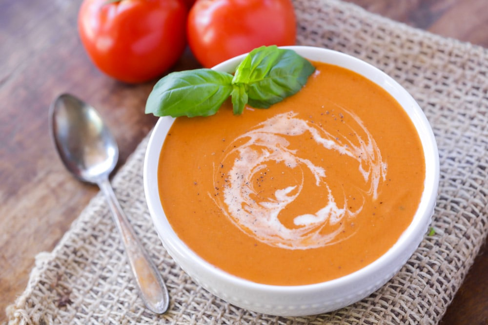

My Favorite Recipe
Tomato Bisque
Ingredients
- 2 tsp minced garlic
- 2 tbsp butter
- 2 tbsp all-purpose flour
- 4 cups chicken broth
- 14 oz crushed tomatoes
- 1/4 tsp paprika
- 2 tsp garlic salt
- 1 tsp basil
- 1 cup of half and half
Instructions
- In a medium saucepan, saute garlic in butter for 1 minute. Then, stir in the flour until blended.
- Pour in the chicken broth, gradually. Stir in the tomatoes, paprika, garlic salt and basil until well blended.
- Bring the pot to a boil and cook for about 2 minutes - or until thickened.
- Using a blender, puree the soup until you reach your desired consistency. You will need to do this in batches.
- Add the pureed soup to a serving bowl and stir in the heavy cream. Season with salt and pepper. Garnish with cream and fresh basil.